Abstract
From architecture to furniture, from cinema to video games, and from literature to comic books, ancient Egypt has been a constant presence for centuries through the adoption and adaptation of its themes, symbolism, and even its fantastical imagery. We call these manifestations of appreciation for ancient Egypt, as well as its reuse and reinterpretation, Egyptomania, a concept that encompasses the different aspects of the reception and globalisation of knowledge about ancient Egypt. Among the expressions of Egyptomania, we must consider fashion – a theme that has not been the subject of an in-depth and broad analysis. This investigation has allowed us to conclude that the influence of ancient Egypt on fashion can be divided into two different periods: the period from Napoleon’s expedition to Egypt (1798–1801) to the discovery of Pharaoh Tutankhamun’s tomb (4th of November 1922), and the post-discovery period, which continues to the present day. This text is devoted to exploring the characteristics of Egyptomania in fashion during the first period, analysing the factors that spurred this interest and the ways in which it manifested itself throughout the nineteenth century and the first decades of the twentieth century. As we consider illustrations essential to a proper understanding of this theme, the text is extensively illustrated, offering readers the opportunity to see concrete representations of what is being discussed.
From antiquity to the present day, ancient Egypt has always drawn attention and sparked the interest of people all around the world. There were, of course, moments of greater importance, such as the period following Napoleon’s expedition to Egypt (1798–1801) and the period following the discovery of Tutankhamun’s tomb (1922). This led to the most diverse expressions of recuperation, reception, reinvention, and recreation of the Egyptian past. From architecture to furniture, from cinema to video games, from literature to comics, for years (even centuries) ancient Egypt was a constant presence through the adoption and adaptation of its themes, symbolism, and even its fantastical imaginary. We call these manifestations of appreciation for ancient Egypt, and its reuse and reinterpretation, Egyptomania. This concept, although not universally accepted,1 is commonly used as the concept that best encapsulates all the different aspects of reception and globalisation of knowledge of ancient Egypt.
One expression of Egyptomania that emerged early and has lasted to the present day, without many interruptions, is fashion. We can consider two periods of influence of ancient Egyptian civilisation, and Egypt itself, on fashion: the period from Napoleon’s expedition to Egypt (1798–1801) to the discovery of Pharaoh Tutankhamun’s tomb (4th of November 1922), and the post-discovery period up to the present day.
Nevertheless, the history of fashion is almost absent with respect to the first period.
The discovery of Tutankhamun’s tomb, in 1922, and the exhibition of the bust of Queen Nefertiti in Berlin, Germany, in 1923, are commonly accepted as the events that triggered a wave of Egyptomania with strong repercussions in fashion. Kennedy, Stoehrer, and Calderin state: “Archaeologist Howard Carter discovers and starts excavating the tomb of the pharaoh Tutankhamun in Egypt’s Valley of the Kings. The resultant Egyptomania spreads to the design of clothing and accessories.” (Kennedy, Stoehrer, Calderin, 2013, 20). At the same time, the work Fashion. The Definitive History of Costume and Style, edited by the Smithsonian, puts the spotlight on Nefertiti and the exhibition of her bust in Berlin in 1923, as the key element to the development of Egyptomania in fashion (AAVV, 2012, 18).
These are undeniable facts, but they tend to make us forget that what happened at the end of 1922 and the beginning of 1923 is not the beginning of a wave of Egyptomania in fashion, but rather a second wave that responded to new and very striking stimuli.
Thus, without intending to provide a history of fashion over the long period between Napoleon’s expedition to Egypt and the discovery of Tutankhamun’s tomb2, this text will be devoted to exploring the characteristics of Egyptomania in fashion in the first period, analysing the factors that spurred this interest and the ways in which it manifested itself throughout the 19th century and in the first decades of the 20th century.
1. Historical Background – The Development of Egyptomania in the 19th Century/Beginning of the 20th Century
The interest in ancient Egyptian civilisation, whether for its culture, religion, and mythology, or for its art and symbolism, did not arise after Napoleon’s expedition to Egypt (1798–1801). Even earlier, as far back as the classical civilisations, ancient Egypt was a matter of interest and was the subject of many different uses and reuses (Bednarski, 2010; Lloyd, 2010). However, it is after the expedition that we see the most varied adaptations of Egyptian themes emerge in a resounding fashion in a great number of aesthetic manifestations, such as architecture, furniture, different types of artefacts, interior design, and performing arts (Curl, 2005, 225), but also in fashion, mainly in jewellery (Nadelhoffer, 2007, 144–149; Geczy, 2013, 80; Parramore, 2008, 22–4). Concerning the development of Egyptomania in the Western world, Napoleon’s expedition to Egypt can be seen as the opening of a door that was only ajar. From then on, there were many facts that continually enticed and fed the interest “for all things Egyptian” (Humbert, 2015, 467; Parramore, 2008, 18).
The expedition to Egypt, the first great imperialistic incursion into the Near East of modern times, is one of the most remarkable events of the transition from the 18th century to the 19th century, with huge repercussions on the political, military, and cultural scene. It is a milestone with lasting consequences in the scientific rediscovery of the ancient pharaonic civilisation (Bret, 1996, 215). This was a ‘strange endeavour’. Plans for the endeavour began in 1797, when the French Directory, weakened by the previous wars and strongly marked by the economic struggles and popular uprisings, decided, on the 5th of March 1798, to send to Egypt one of the best armies of the Republic under the command of its most brilliant general, dressed in wool uniforms for a hot climate, without declaring war or even letting the troops know where they were headed (Laurens, 1997, 29–40). And, on the 19th of May 1798, under the command of General Napoleon Bonaparte, a powerful army and a huge fleet of ships left Toulon and headed to an unknown destination, towards an adventure that would last until 1801.
By Napoleon’s order, alongside the soldiers, the expedition was composed of a number of engineers, architects, naturalists, botanists, geographers, mineralogists, antiquarians, orientalists, painters, draughtsmen, engravers, and writers, with their characteristic study and working tools (Vercoutter, 1986, 39–55; Sales, 2007, 16; Laurens, 1997, 46, 47). This was the first time that a scientific delegation, by political invitation, joined a military campaign.
Between 1798 and 1801, amid a series of massacres, riots, victories, and losses that threatened the French political, military, and economic success, Napoleon Bonaparte’s expedition opened a different era in relations between East and West concerning culture and science. As a result, the global perception and reception of Egypt in the educated and informed Europe changed dramatically. During their stay, the group of scholars tried to explore, study, register, describe, and map all aspects of Egyptian life (culture, architecture, fauna, flora, minerals, etc.), not only in contemporary Egypt but also in the earliest periods of Egypt’s history.
Regarding primarily the European situation,3 focusing mainly but not exclusively on France and England (Humbert, 1989, 26; Fritze, 2016, 185) in the post-expedition period (specifically during the 19th century until the 4th of November 1922), and in many cases influenced directly or indirectly by it, it is possible to identify numerous events that brought Egypt closer to Western culture. This not only fostered knowledge of this civilisation but also boosted an interest, a fascination that resulted in a more frequent use of Egyptian themes, usually called “Egyptian Revival”.4 From these events of many and various kinds, we emphasise some of them for their proven impact on the development of Egyptomania in this period:
a) 1802: Publication, in France and in England, of the work by Vivant Denon titled Voyage dans la Basse et la Haute Egypte, pendant les campagnes du général Bonaparte. According to Curl (2005, 205), “[w]ith its publication the nineteenth-century Egyptian Revival began in earnest”.
b) 1809–1828: Publication of Description de l’Égypte ou Recueil des observations et des recherches qui ont été faites en Égypte pendant l’expédition de l’armée française, publié par les ordres de Sa Majesté l’Empereur Napoléon le Grand. This work is a result of the data collected by the scholars from the expedition, gathered in a monumental work published in Paris, between 1809 and 1828, with ten volumes in-folio (more than 7000 pages) and thirteen volumes of illustrations, including 900 maps and more than 3000 drawings (Sales, 2001). According to Curl (2005, 230) from the publication of Description, “the Egyptianisation of French Taste proceeded apace.”
c) 1820: Publication of the work by Giovanni Battista Belzoni, Narrative of the Operations and Recent Discoveries within the Pyramids, Temples, Tombs and Excavations, in Egypt and Nubia. In Curl’s words (2005, 262), this book is “one of the most fascinating and lively accounts of Egypt ever written.” This work was followed by an exhibition in the Egyptian Hall5 that was an instant success. “It featured replicas of two of the finest chambers in the tomb of Seti I (whose sarcophagus Belzoni also brought to London), and it enabled enormous numbers of people to see the first major exhibition of Ancient Egyptian artefacts in London, so interest in Egypt was quickened” (Curl, 2005, 262).
d) 1822: Decoding of hieroglyphic writing by Jean-François Champollion from the Rosetta Stone, a stele discovered in mid-July 1799 by the soldiers from the Napoleonic army6.
e) 1836: Placement, in the place de la Concorde, in Paris, of an obelisk of Ramses II, coming from Luxor, offered to France by Muhammad Ali Pasha, in 1829 (Fritze, 2016, 171; Curl, 2005, 277).7 As per Nadelhoffer (2007, 144), “from then on it would be impossible to imagine the repertoire of French and English jewelry without Egyptian motifs (…).”
f) 1851: Great Exhibition of the Works of Industry of All Nations (London). International exhibition where the “Egyptian Court” was exhibited, created by the architect Owen Jones and the English Egyptologist Joseph Bonomi Jr., in which they attempted to reproduce the monuments, the design, and the Egyptian colours (Fazzini and McKercher, 2001, 461).
g) 1867: Exposition Universelle d’Art et d’Industrie (Paris).8 Hurley (2020, 185) states: “Among the many attractions that these visitors could see in the exhibition grounds was the Egyptian Park, a curious assembly of various buildings, one of which housed an interesting display of antiquities. This exhibit proved to be a winner, highly popular with a wide public (…).” The “Temple Égyptien” (Fig. 1) was part of the park, drawn by Drevet, with Egyptologist Auguste Mariette as a consultant, inspired by the temple of Philae (Curl, 2005, 328; Fazzini and McKercher, 2001, 461).
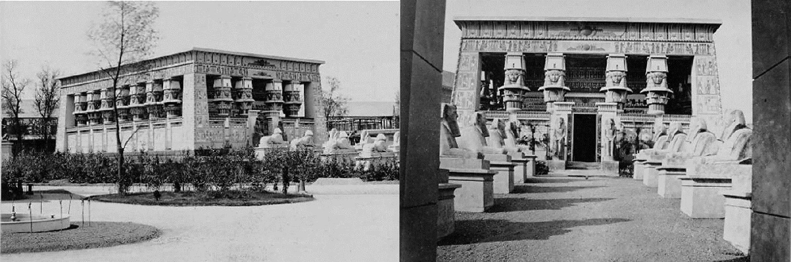
Figure 1 – “Egyptian Temple” in the Exposition Universelle d’Art et d’Industrie (Paris, 1867).
Source: Archives Nationales. Commission Impériale. Exposition Universelle de 1867 à Paris.
Documents iconographiques.
h) 1869: Opening of the Suez Canal, a worldwide event in which dozens of European guests participated (Solé, 1998, 56).
i) 1871: Opera Aïda at the Cairo Opera House. The plot and the scenario were by the Egyptologist Auguste Mariette, musical composition by Giuseppe Verdi, and it was imagined to be “the ‘total Egyptianizing show’” (Humbert, 2015, 478; 1985). Many other performances followed, in Europe, with the expected effect from this way of presenting ancient Egypt (Fig. 2).9
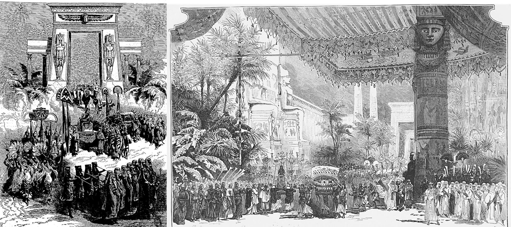
Figure 2 – Illustration of the representation of Aïda by Verdi (2nd act), in Paris
(on the left, 1876; on the right, 1880).
L’Univers Illustré (29th of April 1876) and Le Monde Illustré (3rd of April 1880).
Source: gallica.bnf.fr / Bibliothèque nationale de France.
These events, spanning the 19th and early 20th centuries, stimulated interest in and the resulting (re)use of ancient Egyptian themes. Before ending this review, we should mention other developments that were both responses to these and other stimuli—such as new archaeological discoveries10 or exhibitions of Egyptian art—and new triggers of Egyptomania themselves. We’re talking, for example, about the growth of Egypt as a tourist destination (Fritze, 2016, 187–8; Humbert, 1989, 30), but also about its growing presence in art, cinema,11 opera, ballet, literature, and advertising (Fazzini and McKercher, 2001, 463; Humbert, 2015, 472–78).
We must also mention the Egyptian influence in the art style called Art Nouveau (Fazzini and McKercher, 2001, 461). Humbert (1989, 30) affirms:
Déjà aux siècles précédents, l’égyptomanie s’était mêlée aux styles contemporains, au classique, au néo-gothique, au style Empire; mais jamais, jusqu’alors, elle ne s’était si intimement mélangée avec un style comme elle le fait avec l’Art nouveau, et avec les diverses tendances novatrices du début du XX siècle, et comme elle le fera dans les périodes suivantes avec l’Art Déco et l’art contemporain.
In conclusion, there were many events that, during the period following Napoleon’s expedition to Egypt and throughout the 19th century, allowed ancient Egypt to remain a constant presence in the Western world. That presence is mainly noticeable in architecture, furniture, interior design, and decorative arts. As Humbert (1989, 276) explained very eloquently, one of the outcomes of this atmosphere was fashion: “Eléments architecturaux, décor intérieur, mobilier, objets d’or égyptisants: comment vivre dans une atmosphère aussi évocatrice sans succomber un beau jour à l’envie de s’habiller soi-même à l’égyptienne et s’imaginer être, l’espace d’un instant, Ramsès ou Cléopâtre?”
2. Ancient Egypt in fashion During the 19th Century/Beginning of the 20th Century
“Maintenant c’est l’Égypte qui nous inspire”
(Vogue, August 1920)
Let us focus now on the different ways in which ancient Egypt is present in fashion during the period between Napoleon’s expedition to Egypt and the discovery of Pharaoh Tutankhamun’s tomb.
We start by explaining that, although the concept/idea of fashion can also include jewellery/bijouterie, ornaments and accessories, and even hairstyles, we will focus on clothing, more specifically, women’s clothing. It is impossible to ignore the impact that Egyptian themes had on these areas, and, for that reason, we will not disregard them, since they are essential for identifying the main sources of inspiration. Nonetheless, we will not devote an in-depth analysis to them, because jewellery in particular deserves its own study.12 It is also important to clarify once again that, even though the period of analysis covers 120 years in which, obviously, women’s fashion experienced different phases and many changes, in this study we are not concerned with developing this aspect of the history of fashion. Our objective is to understand in what way ancient Egypt was present in women’s clothing throughout this period, regardless of the many different features that clothing had throughout more than 100 years. Finally, we used as our sources mainly but not exclusively French, English, American, and Spanish women’s and fashion magazines13 available online (see Table 1). It is important to point out, however, that France was the centre of fashion, where trends were set, both then and now, and it was common for magazines from other countries to have direct references to what was being worn in Paris.
Origin | Title |
|---|---|
Paris (France) | Art, Goût, Beauté: Feuillets de L'élégance Féminine |
Paris (France) | Femina: Publication Bi-Mensuelle Illustrée |
Paris (France) | Gazette du Bon Ton. Arts Modes & Frivolités |
Paris (France) | Jardin des Modes Nouvelles |
Paris (France) | Journal des Dames et des Modes |
Paris (France) | La Mode: Revue des Modes, Galerie de Mœurs, Album des Salons |
Paris (France) | La Mode Illustrée. Journal de la Famille |
Paris (France) | La Modiste Universelle: Édition de Chapeaux-Modèles |
Paris (France) | La Sylphide: Journal de Modes, de Littérature, de Théâtres et de Musique |
Paris (France) | La Vie Parisienne: Mœurs Élégantes, Choses du Jour, Fantaisies, Voyages, Théâtres, Musique, Modes |
Paris (France) | Le Journal des Coiffeurs: Publication des Coiffeurs Réunis |
Paris (France) | Le Journal des marchandes de modes: revue spéciale des chapeaux, bonnets, coiffures et lingeries |
Paris (France) | Le Petit Écho de la Mode |
Paris (France) | Les Élégances Parisiennes: Publication Officielle des Industries Françaises de la Mode |
Paris (France) | Les Modes de la Femme de France |
Paris (France) | Les Modes: Revue Mensuelle Illustrée des Arts Décoratifs Appliqués à la Femme |
Paris (France) | Paris Élégant: Publication Exclusivement Parisienne |
Paris (France) | Vogue |
London (UK) | The Ladies’ Cabinet of Fashion, Music and Romance |
London (UK) | The Ladies’ Companion, and Monthly Magazine |
London (UK) | The Ladies’ Pocket Magazine |
London (UK) | The Lady’s Magazine; Or, Entertaining Companion for the Fair Sex, Appropriated Solely to Their Use and Amusement ... |
London (UK) | The Lady’s Monthly Museum |
Cadiz (Spain) | El Correo de la Moda, Álbum de las Señoritas |
Madrid (Spain) | La Moda Elegante |
Madrid (Spain) | La Última Moda |
New York (USA) | Cosmopolitan |
New York (USA) | Demorest’s Monthly Magazine |
New York (USA) | Godey’s Lady’s Book |
New York (USA) | Harper’s Bazaar |
New York (USA) | The Delineator |
New York (USA) | The Lady’s Book |
Philadelphia (USA) | The Ladies’ Home Journal |
Philadelphia (USA) | Peterson’s Magazine |
Philadelphia (USA) | The Lady’s Friend |
So, the data collected allow us to group the Egyptian influence in fashion throughout this period in three categories:
1) Evident presence, identified and/or identifiable, of Egyptian symbolism, such as hieroglyphs, lotus, sphinx, mummies, Egyptian heads, scarabs, etc.;
2) Affirmed presence, but not identified and/or identifiable, of Egyptian symbolism, usually expressed by concepts such as “Egyptian drawings”, “Egyptian themes”, etc.;
3) Egyptian inspiration identified by expressions such as “Egyptian style” or “à l'Égyptienne”. Without evident Egyptian symbolism, an idea associated with ancient Egypt is reproduced, forging a link that is not always obvious.
We want to make it clear that this categorisation is the direct result of the collected data, and it was created to facilitate the analysis. It does not reflect an understanding or an organisation that existed at the time, but rather one possible way to organise the information.
2.1 Evident presence, identified and/or identifiable, of Egyptian symbolism, such as hieroglyphs, lotus, sphinx, mummies, Egyptian heads, scarabs, etc.
In the first category we have many examples, throughout the whole period, of clothing in which the fabric pattern used had one or more Egyptian symbols or even, more frequently, the piece would be adorned with Egyptian themes. For example, in November 1871, Harper’s mentions a piece with embroidered mummies and sphinxes, and, in March 1881, the same magazine talks about the preference for ornaments such as sphinxes, scarabs, pyramids, obelisks, lotus flowers, etc. The magazine La Mode Illustrée, on the 23rd of April 1911, writes: “des broderies de soie égyptiennes (…) dans lesquelles on retrouve le triangle, la fleur de lotus, le scarabée sacrés.”
Let us see a few examples of some of these themes. The scarab is one of the traditionally Egyptian motifs present in fashion in this period of analysis. In general, the scarab’s representation serves as a dress’s adornment (Fig. 3-A-B), mentioned, for example, in the magazine La Vie Parisienne (7th of May 1881; 1st of January 1887; and 6th of January 1900), and in the magazine The Delineator, in January 1910. Curiously, Harper’s, in January 1915, shows a dress called “The Scarab” (Fig. 3-C). However, the scarab motif will be more significant in jewellery and in ornaments/adornments.
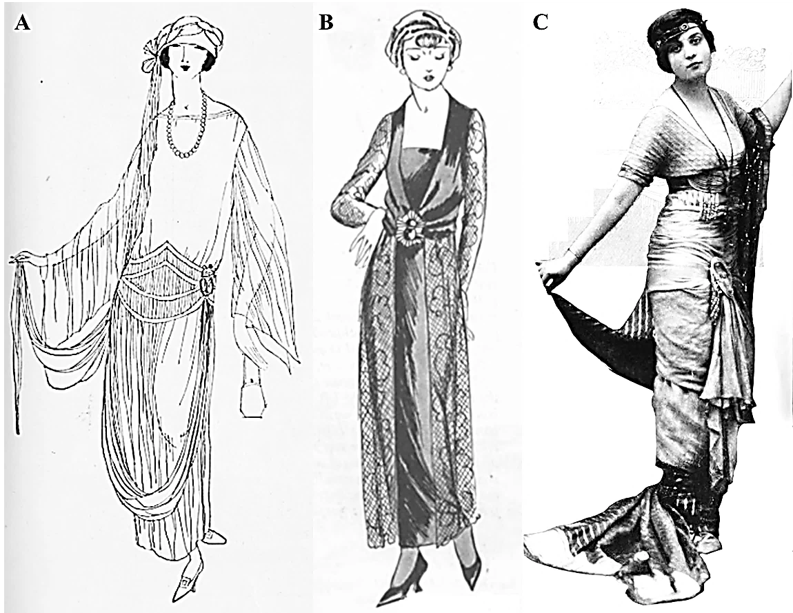
Figure 3 – Scarab-adorned dresses and the dress called “The Scarab”.
A: Vogue (November 1922); B: The Ladies’ Home Journal (October 1920);
C: Harper’s Bazaar (January 1915). Source: gallica.bnf.fr / Bibliothèque nationale de France;
© Public domain.
On the 21st of November 1897, La Mode Illustrée says: “Les bijoux égyptiens sont aussi très en faveur: les hypogées se sont ouverts; et le scarabée sacré, image hiératique du soleil, symbole de l’immortalité, de la vertu guerrière exempte de faiblesse, daigne étendre sur nous ses ailes d’émail; ô déchéance!”. In July 1908, in The Jewelers’ Circular Weekly, a specialised magazine (page 43), Coumbe writes:
After having fallen into desuetude for many years, the ancient Egyptian scarab of 2,500 years ago is again coming into popular favor, according to reports from Europe and this country. Dug out from its long sleep, the jeweler is resuscitating ‘his bugship,’ and the historic and symbolic significance surrounding the insect when expounded to the uninitiated public is likely to prolong the period of scarab activity as a decorative feature.
The hieroglyphs were “an important motif in Egyptianizing fashions” (Bohleke, 2014, 96), and we can identify their presence in fabrics, dress decorations, and in jewellery and adornments. The oldest dresses in which we can identify this theme date back to the 1830s and can be found today in the Worthing Museum and Art Gallery (Worthing, UK) and in the Platt Hall (Manchester, UK) (Fig. 4).
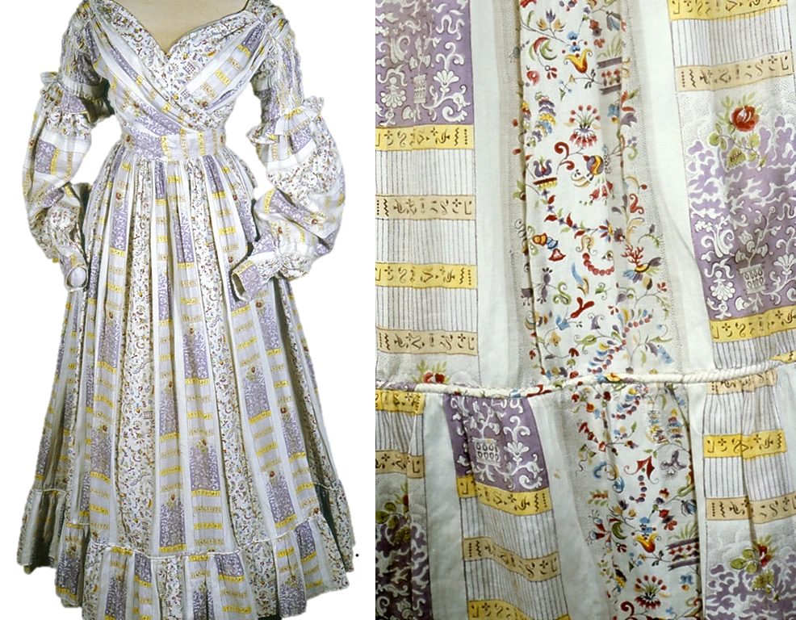
Figure 4 – Dress, dating from 1836–1838, whose fabric pattern includes an attempt
to create Egyptian hieroglyphs [yellow and beige bars].
Image: courtesy of Manchester Art Gallery [1947.2057].
Although Bohleke (2014, 97) considers them rare pieces, they are not unique. The magazine La Sylphide, on the 10th of January 1867, describes a hieroglyph-adorned belt: “Une ceinture égyptienne, brodée d'hiéroglyphes de jais, avec bandelettes illustrées des mêmes motifs de jais tombant tout autour (…).” The magazine The Ladies’ Home Journal, in May 1891, talks about fabrics with prints that “look like Egyptian hieroglyphics.” The Delineator (February 1908) keeps its focus on fabrics: “Silk embroidery reflects the design of Medieval tapestry, while over all the other fields Egyptian influence reigns supreme. Hieroglyphic lozenges are scattered broadcast, and traces of Egypt’s peculiar decorative art are on every side.” On the 1st of January 1917, the magazine Les Élégances Parisiennes describes embroidery veils that reproduce “les étranges créatures des hieroglyphes.” We ought to mention two other dresses: one reproduced in The Ladies’ Home Journal, in October 1914, a dress of great beauty, decorated not only with hieroglyphs, but also with cartouches (Bohleke, 2014, 98–100); and the other one in Vogue, on the 1st of November 1920, identified as having an appliqué of Egyptian embroidery, but a careful analysis shows that it is a simplified attempt to reproduce hieroglyphs (Fig. 5).
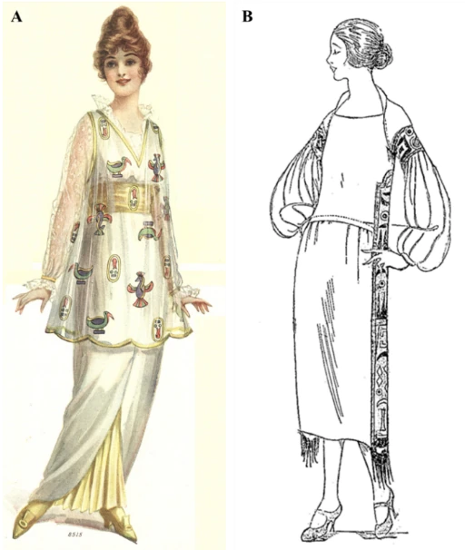
Figure 5 – Dresses with Egyptian hieroglyphs.
A: The Ladies’ Home Journal (October 1914); B: Vogue (1st of November 1920).
Source: gallica.bnf.fr / Bibliothèque nationale de France; © Public domain.
In jewellery and adornments, it is also possible to identify pieces such as brooches, hatpins, or even belt buckles in which Egyptian hieroglyphs, more or less stylised, were chosen as decorative motifs (La Mode Illustrée – 13th of September 1896 and 11th of October 1896; Godey’s Lady’s Book – November 1867). Peterson’s Magazine reports that, in May 1860, Empress Eugénie14 herself fell for the charms of this theme, describing a set comprising a crown, a necklace, and a bracelet that she might have worn at a ball in the Tuileries Palace.
From this list of Egyptian motifs that inspired fashion in this period, we cannot leave the sphinx out, which is present, directly or indirectly, in many ways. The sphinx was used as a pattern for fabrics (The Ladies’ Cabinet – November 1841) and these fabrics were used for dresses, as shown in La Vie Parisienne (1st of January 1887), with small sphinxes embroidered in gold (Fig. 6-A). The sphinx was also used as a motif in embroideries (Harper’s – November 1871), as an ornament in capes and mantles (Godey’s Lady’s Book – March 1886), as a way of designing collars (Le Petit Écho – 5th of June 1898), on laces (Vogue – 1st of October 1922; Fig. 6-B), and even as the name of dresses (Vogue – 1st of October 1922; Fig. 6-C).
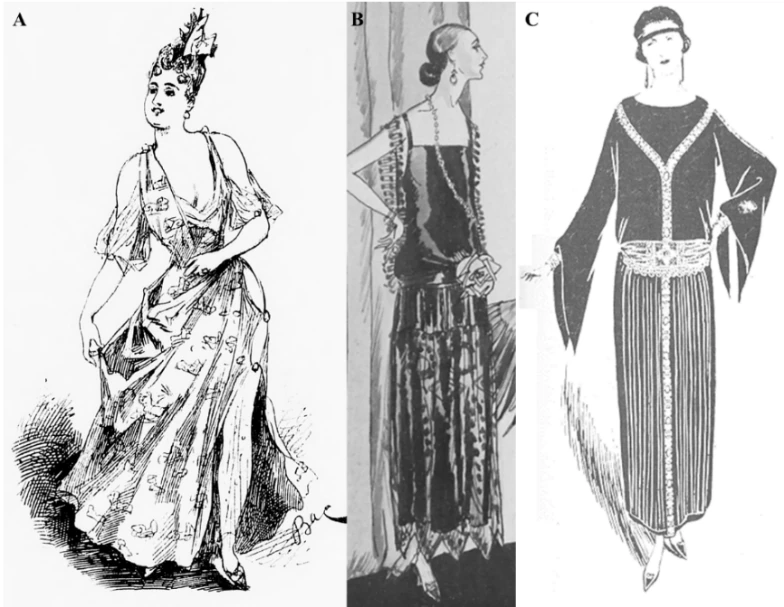
Figure 6 – A dress with sphinx, a dress with laces called sphinx, and a dress called “Sphinx”.
A: La Vie Parisienne (1st of January 1887); B: Vogue (1st of October 1922);
C: Vogue (1st of October 1922). Source: gallica.bnf.fr / Bibliothèque nationale de France.
The sphinx was also the inspiration for hats in that era (Harper’s – October 1921; September and October 1922; Vogue – 1st of October 1921) or even hairstyles.
The so-called “Egyptian heads” were also used as a motif, mainly as a clothing adornment (Godey’s Lady’s Book – March 1873; Les Modes – June 1921) but they can also be present in patterns for fabrics (Harper’s – July 1881). However, the “Egyptian heads” appear mainly in jewellery and accessories. They can appear alone – in earrings (La Vie Parisienne – 1st of January 1863 and 1864), brooches, and hatpins (La Moda Elegante – April 1881 and December 1885; Fig. 7-A-B); or in association with other themes, for example, a set with “Egyptian heads” and hieroglyphs (Demorest’s Monthly – September 1868; Fig. 7-C).
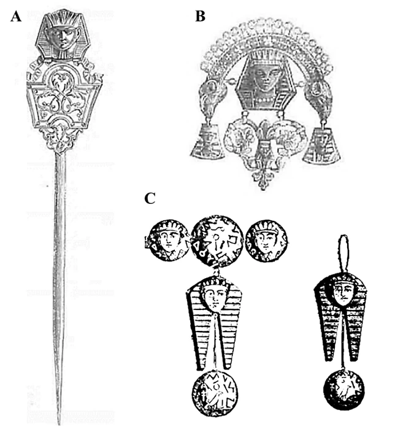
Figure 7 – Jewellery and adornments with “Egyptian heads”.
A: La Moda Elegante (April 1881); B: La Moda Elegante (December 1885);
C: Demorest’s Monthly (September 1868). © Public domain.
Although commonly associated with ancient Egypt and usually listed together with Egyptian themes in clothing, as we did in the beginning, the lotus flower is, however, barely mentioned in clothing as being undeniably of Egyptian influence, as it can come from other cultures. Specifically, we have only one mention of embroideries with “Egyptian lotus influence” in Harper’s, in January 1909. Without a specific mention, in Les Modes, on the 1st of January 1909, there is a dress in which we can identify, besides the embroidered scarab on the chest, various lotus flowers distinctively Egyptian (Fig. 8).
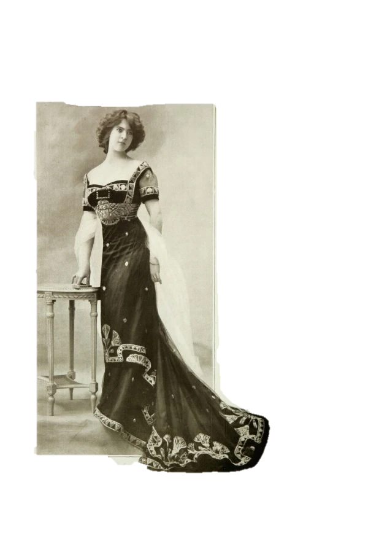
Figure 8 – Dress with Egyptian embroidery – scarab and lotus flower.
Les Modes (1st of January 1909).
Source: gallica.bnf.fr / Bibliothèque nationale de France.
Last but not least, regarding Egyptian motifs clearly identified in clothing, we have the case of three dresses, all from 1921: the first one is inspired by architectonic motifs and described as such: “Le créateur d’une robe (…) a tout simplement reproduit un morceau d’architecture égyptienne à la ceinture et sur le panneau d’une robe (…)” (Vogue – 15th of January 1921; Fig. 9-A); the second dress is “orné de bateaux égyptiens” (Vogue – 15th of June 1921; Fig. 9-B); and the third one is called “robe d’hypogée”, of which it is said that “[l]e sphinx n’est pas plus égyptien que cette robe d’hypogée (…)” (Vogue – 1st of July 1921; Fig. 9-C).
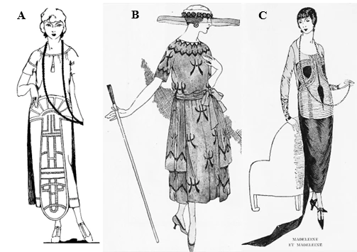
Figure 9 – Dresses with other Egyptian themes.
A: Architectonic elements. Vogue (15th of January 1921); B: Egyptian boats. Vogue (15th of June 1921);
C: Hypogeum. Vogue (1st of July 1921).
Source: gallica.bnf.fr / Bibliothèque nationale de France.
In sum, the abovementioned examples help us to understand that the Egyptian imagery, identified and identifiable through motifs that are easily associated with ancient Egypt, such as scarabs, hieroglyphs, sphinx, etc., may have been the most evident way in which this civilisation was present in this period’s clothing.
2.2 Affirmed presence, but not identified and/or identifiable, of Egyptian symbolism, usually expressed by concepts such as “Egyptian drawings”, “Egyptian themes”, etc.
The use of this Egyptian symbolism is not limited to its more evident or identifiable expressions. The second category of Egyptian influence in fashion – affirmed presence, but not identified and/or identifiable, of Egyptian symbolism – is based on the same assumption but without naming/identifying particular motifs. As a rule, we talk about patterns in fabrics and/or embroideries in clothing pieces that appear with simple but not very descriptive expressions, such as “Egyptian drawings” or “à l'égyptienne”, “Egyptian patterns”, “Egyptian embroideries”, or “Egyptian motifs”.
What distinguishes this category from the first is that, in the first category, looking at the clothing piece, we can easily identify the Egyptian or Egyptianizing motif, whilst, in the second category, the Egyptian and Egyptianizing motif is identified in the description of the fabric or the clothing piece, but it is not necessarily identifiable. In other words, we must trust the description the magazine gave these pieces, even if we cannot validate it. We can say that, in this case, the need to evoke Egypt is far superior to the need to demonstrate it.
The expression “Egyptian drawings” or “à l'égyptienne” is the most common, used from March 1834 (La Mode) to April 1921 (Les Modes de la Femme). The Ladies’ Home Journal, in July 1891, describes a dress as such: “This gown is made of challie, with one of the Egyptian designs thickly covering its white ground.” (Fig. 10-A); the magazine The Delineator, in May 1910, presents a dress “… bordered with narrow band embroidered in a massive Egyptian design in silver” (Fig. 10-B); the same publication, in April 1910, has a dress with “embroidery following a simple Egyptian design” (Fig. 10-C); Harper’s, in May 1914, presents two dresses with this type of pattern, the first, “painted in a black and white Egyptian design” (Fig. 10-D), the second with a “mantle painted in an Egyptian design on the right shoulder and on the train” (Fig. 10-E); lastly, Les Modes de la Femme, from the 10th of April 1921, has a dress and a cape “brodé de dessins égyptiens” (Fig. 10-G). These are just some examples of many references to this type of pattern. But, as we can understand by Figure 14, these expressions cover a wide range of decorative motifs and, in most cases, we could not identify the influence without the reference to ancient Egypt.
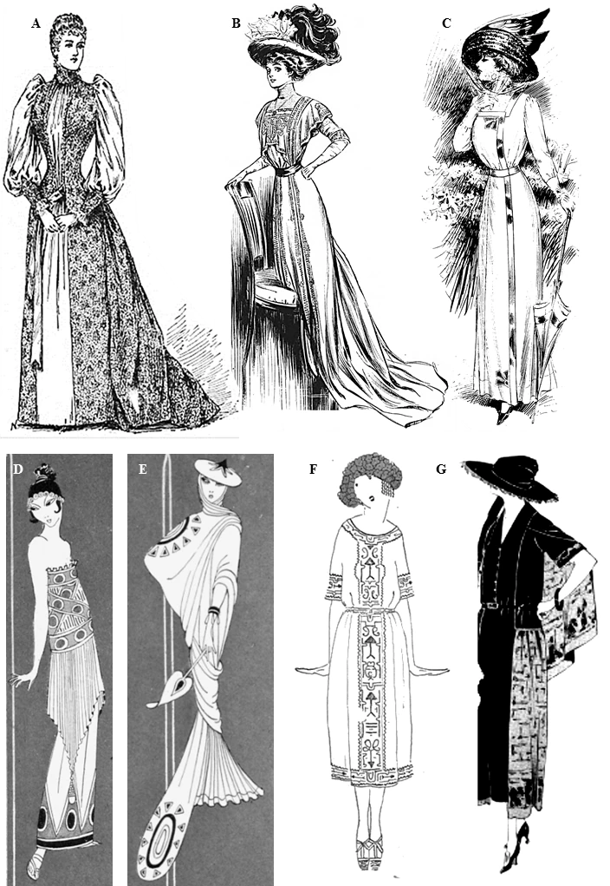
Figure 10 – Clothing described as having “Egyptian designs”/“à l’égyptienne”.
A: The Ladies’ Home Journal (July 1891); B: The Delineator (May 1910);
C: The Delineator (April 1910); D and E: Harper’s (May 1914);
F: Harper’s (April 1920); G: Les Modes de la Femme (10th of April 1921).
Source: gallica.bnf.fr / Bibliothèque nationale de France; © Public domain.
This can also be applied to the expression “Egyptian pattern”. With a lower incidence, this description appeared, mostly in the 1830s (The Lady’s Book, in June 1835 and in March 1836, and The Ladies’ Pocket, in May 1836 – Fig. 11-B), but also in The Delineator, in 1910, and in Harper’s in November 1922.
In The Lady’s Book, in June 1835, a dress is described as having “a black ground figured in white in an Egyptian pattern” (Fig. 11-A), and, in March 1836, the focus is on the “cashmere shawl, of an Egyptian pattern” (Fig. 11-C). Years later, with a different style of clothing, Harper’s, in November 1922, describes one of the dresses and says that “[o]ne of the strongest proofs of the Egyptian influence is the (…) gown above, of black charmeuse with embroidery in an Egyptian pattern” (Fig. 11-D).
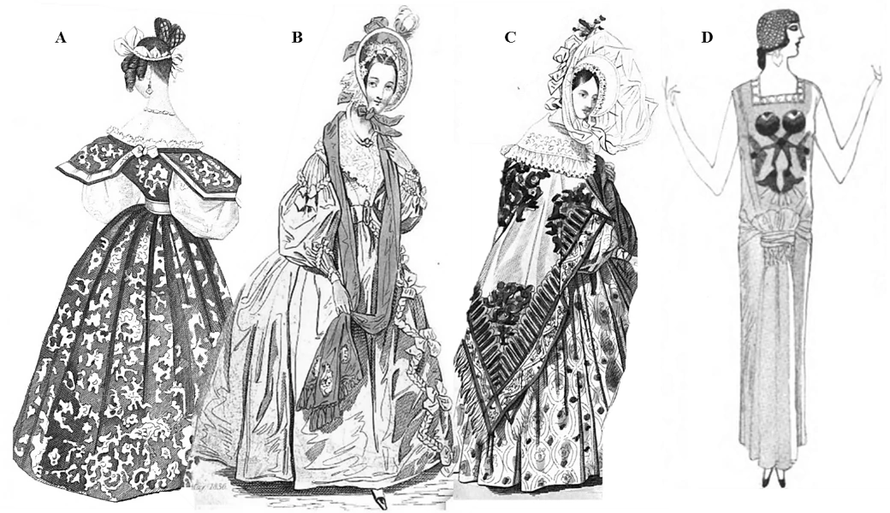
Figure 11 – Clothing described as having an “Egyptian pattern”.
A: The Lady’s Book (June 1835); B: The Ladies’ Pocket (May 1836);
C: The Lady’s Book (March 1836); D: Harper’s (November 1922).
Source: gallica.bnf.fr / Bibliothèque nationale de France; © Public domain.
Another expression is “Egyptian motifs”, identifiable in the description of a dress in the magazine Femina, on the 15th of February 1911: “Robe de velours noir brodée de motifs égyptiens”, in Harper’s, in April 1920, describing a skirt: “The skirt is embroidered with jewels in Egyptian motifs on a ground of white net (…)” (Fig. 12); and, again, in Harper’s, in November 1922: “(…) emphasised the Egyptian atmosphere on this black velvet gown by ornamenting the bodice with Egyptian motifs of blue and gold beads”.
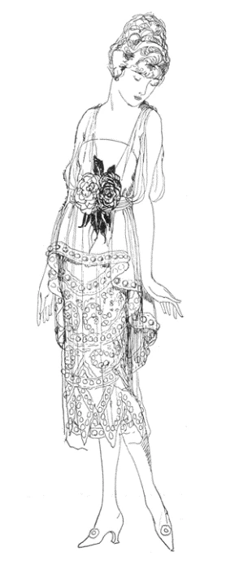
Figure 12 – Dress with “Egyptian motifs”.
Harper’s (April 1920).
Source: gallica.bnf.fr / Bibliothèque nationale de France.
More common is the reference to “Egyptian embroideries”. The magazine Le Petit Écho, on the 29th of October 1911, states: “Les broderies égyptiennes en soie et fil d’or sont très à la mode (…).” As examples, we can mention the design presented in The Delineator, in March 1906, which states: “On the corsage is some delightful Egyptian embroidery in several shades of blue (…)” (Fig. 13-A). In the same publication, in July 1917, we have two dresses with the same decoration: “Very lovely is this dress of sandstone faille with its Egyptian embroidery worked in shrimp pink (…)” (Fig. 13-B); “The embroidery is Egyptian (…)” (Fig. 13-C). In the dress presented in Vogue, on the 1st of July 1920, the focus is on an appliqué on the waist: “La ceinture est basse ornée d’une applique de broderie Égyptienne d’une note très nouvelle est très chic.” (Fig. 13‑D). Harper’s, in April 1921, shows a cape “elaborated with silk and tinsel Egyptian embroidery” (Fig. 13-E). Lastly, we have an example in the magazine Les Modes, in April 1911, that has a more detailed description: “Tunique de gaze blanche peinte et rebrodée d’une frise égyptienne brique et noire” (Fig. 13-F).
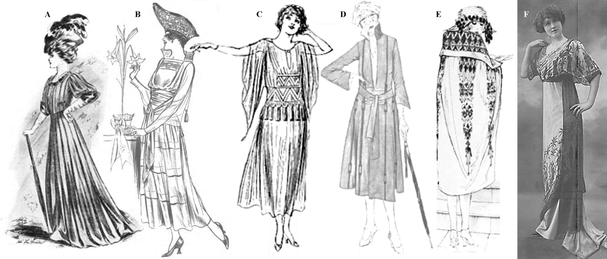
Figure 13 – Dress described as having “Egyptian embroideries”.
A: The Delineator (March 1906); B / C: The Delineator (July 1917);
D: Vogue (1st of July 1920); E: Harper’s (April 1921); F: Les Modes (April 1911).
Source: gallica.bnf.fr / Bibliothèque nationale de France; © Public domain.
In conclusion, although we consider it more useful, from an analytical perspective, to separate the different expressions used to describe the presence of Egyptian motifs in clothing that are not identified or even easily identifiable, the truth is that, often, they appear together. As an example, in The Delineator, in April 1915, there’s a dress described as being “embroidered in Egyptian designs”, combining the first and second categories analysed. Obviously, this distinction did not exist in the descriptions of these dresses – there is no clear reason for the descriptions themselves. However, for formal reasons regarding presentation and analysis, it is easier to separate them by categories. The only exception is the embroideries, which refer to a specific technique and outcome. The remaining designations are broad and vast enough to be manifold, that is, when it comes to identifying the Egyptian influence in clothing, they are uncompromised options.
This influence can, and should, be considered because it is shown to us in an unsurpassable way in fashion magazines of the time. Nonetheless, every time these publications include images of what they describe, we always struggle to see the actual influence of ancient Egypt. Even a keen eye for identifying Egyptian motifs struggles to confirm and even justify that influence. The exceptions are Figures 10-F and 10-G: with some effort, we can catch a glimpse of an attempt to reproduce hieroglyphs. The remaining cases seem to draw on an Egyptian visual vocabulary, such as that presented in 1856 by Owen Jones in The Grammar of Ornament (Fig. 14).
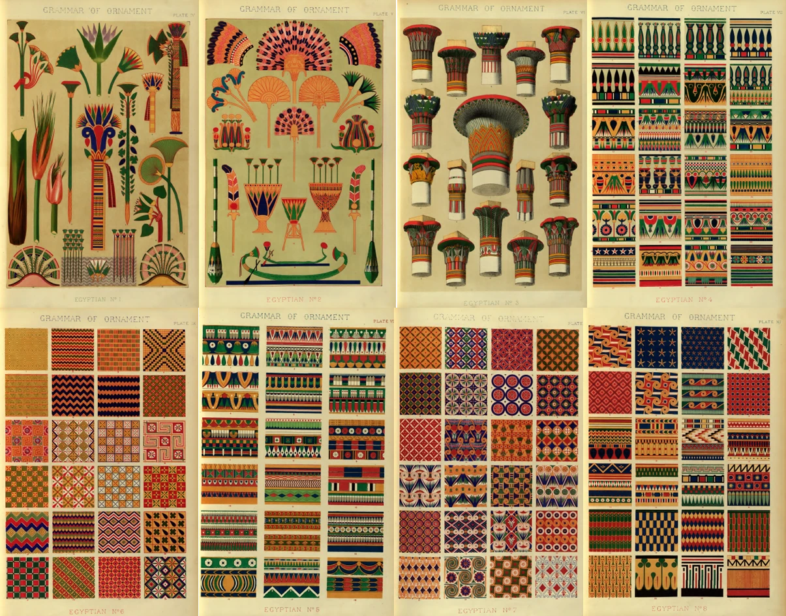
Figure 14 – Examples of Egyptian patterns.
(Jones, 1856, Plates IV to IX).
2.3 Egyptian inspiration identified by expressions such as “Egyptian style” or “à l’égyptienne”. Without evident Egyptian symbolism, an idea associated with ancient Egypt is reproduced, forging a link that is not always obvious.
The third and last category of analysis – Egyptian inspiration identified by expressions such as “Egyptian style” or “à l’égyptienne”, without evident Egyptian symbolism – is also the most challenging one in terms of analysis since the link that is forged is not always obvious. Women’s clothing that falls into this category results from an analysis, interpretation, and adaptation of ancient Egypt that goes beyond the obvious. It is not limited to the adoption of Egyptian symbolism, but it reveals a more creative and, also, often, a more methodical look: its creators paid attention not only to Egyptian themes, but also to Egyptian clothing itself. For that reason, we start by showing some images of material available at the time that could have served as inspiration (Figs. 15 and 16).
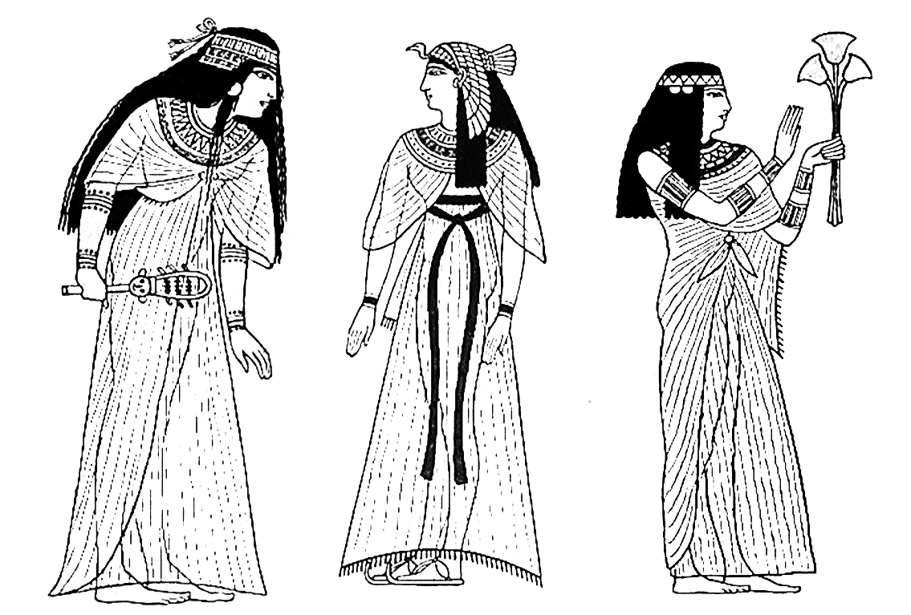
Figure 15 – Representations of Egyptian women’s clothing.
(Houston, Hornblower, 1920, Plates VI, VIII and X).
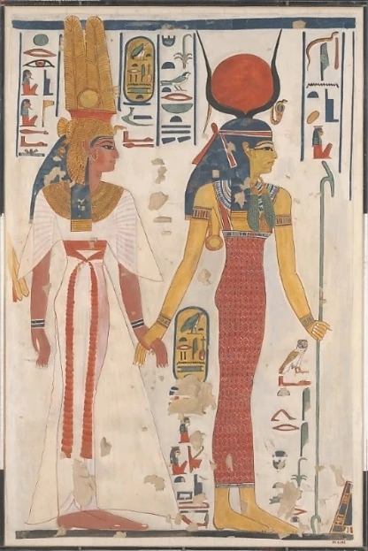
Figure 16 – Representation of Queen Nefertari in a scene from her tomb (being led by the goddess Isis) discovered by Ernesto Schiaparelli, in 1904 (QV66 - Valley of the Queens).
[Charles K. Wilkinson] Image courtesy of The Metropolitan Museum of Art.
Most of the cases that fit this category date back to the 20th century. From the previous century, we only have three examples which do not allow for an in-depth analysis. In June 1812, the magazine The Lady’s Monthly presents what it calls “an Egyptian robe” (Fig. 17-A), without explaining the designation. Similarly, La Mode Illustrée, on the 1st of September 1889, published a “corsage-veste égyptienne” (Fig. 17-B) without further explanation. The magazine La Sylphide, on the 17th of September 1846, mentions “robes en drap égyptien”, without explaining what was meant by “Egyptian drapes”.15
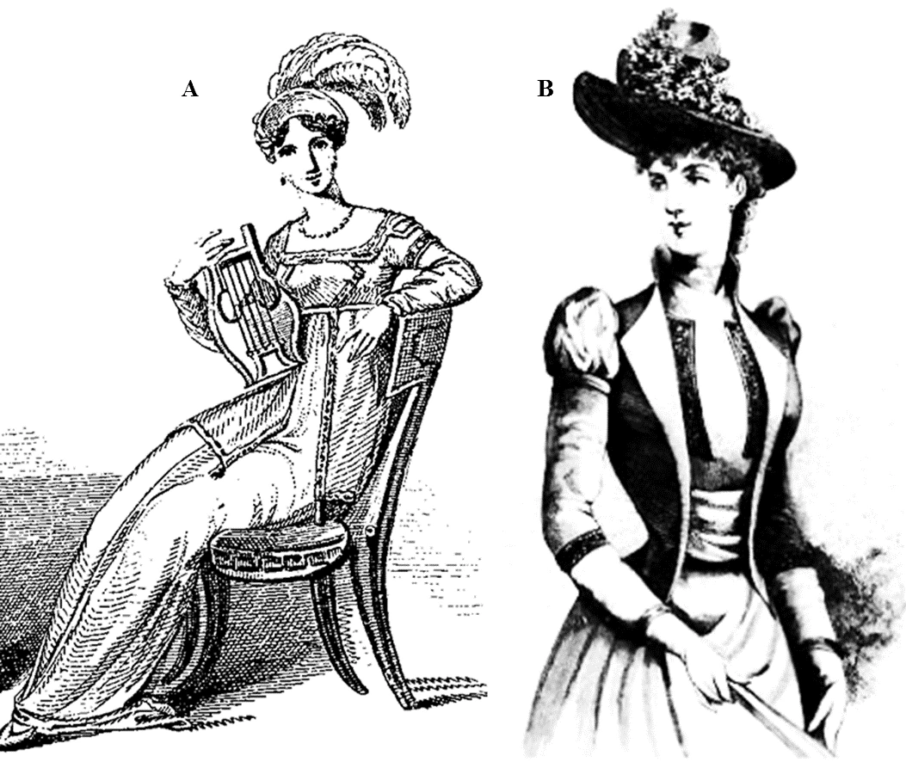
Figure 17 – Two examples of “Egyptian” clothing of the 19th century.
A: The Lady’s Monthly (June 1812); B: La Mode Illustrée (1st of September 1889).
Source: gallica.bnf.fr / Bibliothèque nationale de France; © Public domain.
The first decades of the 20th century – particularly the early 1920s – provide numerous examples of this type of Egyptian influence, so much so that we can identify different features that shaped what the magazines understood/named as “Egyptian style”, “Egyptian feeling”, or “Egyptian spirit”. Let us start with some specific examples of some dresses and their corresponding descriptions so that we can then proceed to some possible conclusions.
From the 1910s, there are two examples in the magazine Les Modes: in February 1911, a dress (Fig. 18-A) is described as a “[r]obe égyptienne en toile d’argent, garnie d’une large ceinture de jais enroulant la taille (…)”; in June 1913, we have a design with similar features (Fig. 18-B) but with a simpler description: “Robe égyptienne en mousseline de soie grise et bleue”. Considering the similarity of the design – especially the ribbon on the waist – we can assume that, at the time, the description “robe égyptienne” would suffice. Furthermore, the Ladies’ Home Journal, in September 1913 (Fig. 18-C), states that “[s]ashes are another important thing in the new fashions. (…) Sashes are taken from the earliest Egyptian fashions on down through the various styles of each succeeding century.”
Following a chronological timeline, we jump to 1920, where we find a mention of belts/ribbons of Egyptian inspiration, as we see in the blouse in Harper’s, in October 1920: “(…) an interesting blouse, very Egyptian in feeling.” (Fig. 19-A), and a set in Vogue, in November 1920, whose description mentions “[u]ne longue ceinture, très égyptienne (…)”, and the caption says that “[l]a ceinture est égyptienne” (Fig. 19-B).
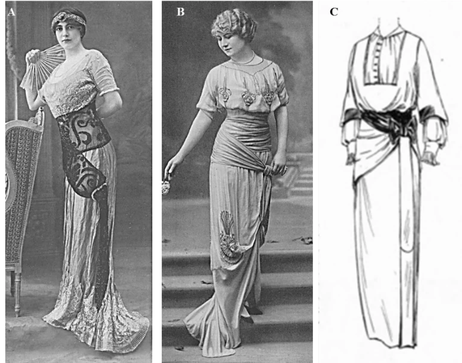
Figure 18 – “Robes égyptiennes”.
A: Les Modes (February 1911); B: Les Modes (June 1913); C: Ladies’ Home Journal (September 1913). Source: gallica.bnf.fr / Bibliothèque nationale de France; © Public domain.
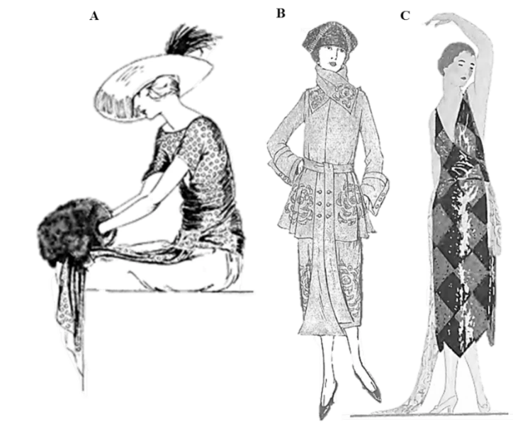
Figure 19 – Examples of “Egyptian style” of 1920.
A: Harper’s (October 1920); B: Vogue (November 1920); C: Gazette (July 1920).
Source: gallica.bnf.fr / Bibliothèque nationale de France; © Public domain.
In the same year, we identify two new features said to be imported from ancient Egypt. In April, Harper’s describes the position of the waist (low hip waistline) as Egyptian-inspired:
The waist-line is generally placed at the top of the hips and often about the broadest part of the hips – in the form of a girdle, tied in front or on side. The Egyptian influence visible in the collection of Madeleine and Madeleine is responsible for the position of the waist-line in that house, some of the girdles being extremely low.
The American magazine The Ladies’ Home Journal, in November 1920, keeps the focus on the waist, and adds a new type of silhouette – “long, supple, straight lines” – that, among others, was of Egyptian influence. July’s Gazette of the same year only says “une robe d’une ligne égyptienne”, to describe a dress that followed the same design accompanied by a new version of the ribbon/belt previously mentioned (Fig. 19-C).
Vogue, in June, also identifies the modern long and straight lines of Egyptian influence: “on voit la cérémonieuse robe orientale ou égyptienne avec ses lignes longues (…)” and “(…) les lignes droites de l’Égypte (…)”.
In 1921, we have some more examples that allow us to shape what, at the time, was seen as “Egyptian style”. Vogue, on the 15th of March, presents a dress “(…) dont un pan tombe droit dans un style égyptien” (Fig. 20-A), and on the 15th of November describes, thus, another dress: “Des cascades de mousseline de soie plissée retombant des manches courtes et de la ceinture basse donnent un caractère égyptien à cette robe toute droite (…)” (Fig. 20-B). Les Modes de la femme, on the 6th of February 1921, refers specifically to a skirt of straight and narrow lines, giving it a “forme égyptienne”.
In this year, there were no significant changes to what we found before. What becomes clear is that these features become increasingly evident within the period of analysis and peak in 1922.
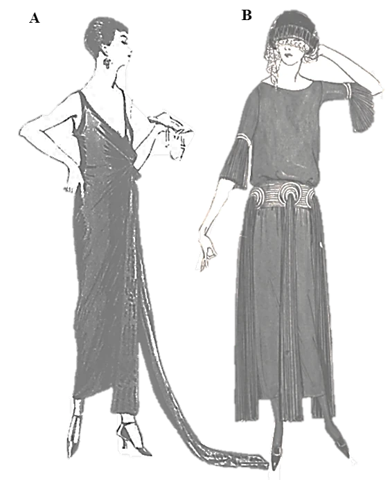
Figure 20 – Examples of the “Egyptian style” of 1921.
A: Vogue (15th of March 1921); B: Vogue (15th of November 1921).
Source: gallica.bnf.fr / Bibliothèque nationale de France.
In Vogue, on the 15th of March 1922, there is a dress that, besides having an unidentified Egyptian motif on the waist, has the abovementioned low waist and drapes that fall on the side (Fig. 21-A). In the May 1922 issue of Art, Goût, Beauté, the Egyptian waist is again highlighted (Fig. 21-B). The rest of the examples were gathered in Harper’s, and we emphasise not only the illustration of the dresses but also the description that follows, whose relevance justifies its reproduction. In May 1922, the magazine presents a dress with this description: “Rather Egyptian in feeling is this gown (…). The skirt swings in long folds from a low-placed jeweled girdle, much like the decorative girdle princesses of the Ptolemies were so fond of wearing” (Fig. 21-C). In October of the same year, two dresses are published with these captions:
Again the Egyptian influence, and this time decidedly marked. Violet velours, in folds over the hips and across the back, to an ornamental clasp placed at a rather low waist-line in front. From each side of this clasp swing long violet tassels that emphasize the Egyptian idea. Neck-line and shoulder straps are in spirit with the Egyptian feeling. (Fig. 21-D)
The Egyptian influence that has crept into so many Paris gowns, both into designs of their fabrics and into their lines, is rather marked in this Worth gown of brown chiffon velvet. It is made in one straight piece, with all of its fulness draped to the front and caught by a long brown silk tassel. This heavy, straight-falling tassel, and the folds cast by the caught-up drapery, suggest the folded scant draperies worn by the best families at the time of the Pharaohs. (Fig. 21-E)
In November 1922, Harper’s presents, in the same article, three dresses of Egyptian influence: “Of deep purple velvet is the bodice above a draped skirt of the velvet brocaded in blue, red, purple, and gold. The tight hip drapery, with the tissue looped out at the waistline, and the winged scarab motif embroidered in blue beads are two expressions of the modern Egyptian feeling” (Fig. 21-F); “Black brocade with a leaf design outlined in gold is equally lovely when reversed to show great gold leaves sketched in with black. (…) the Egyptian influence in a tight band around the hips and the forward movement of the drapery” (Fig. 21-G); “A sleeveless gown of apricot satin, figured with gold, has a shoulder cape, cut circularly, to suggest the Egyptian shawl drapery” (Fig. 21-H). At last, we include part of the description of another dress of the same issue of the magazine, but without an image: “A gown with the wide Egyptian girdle tight about the hips (…).”
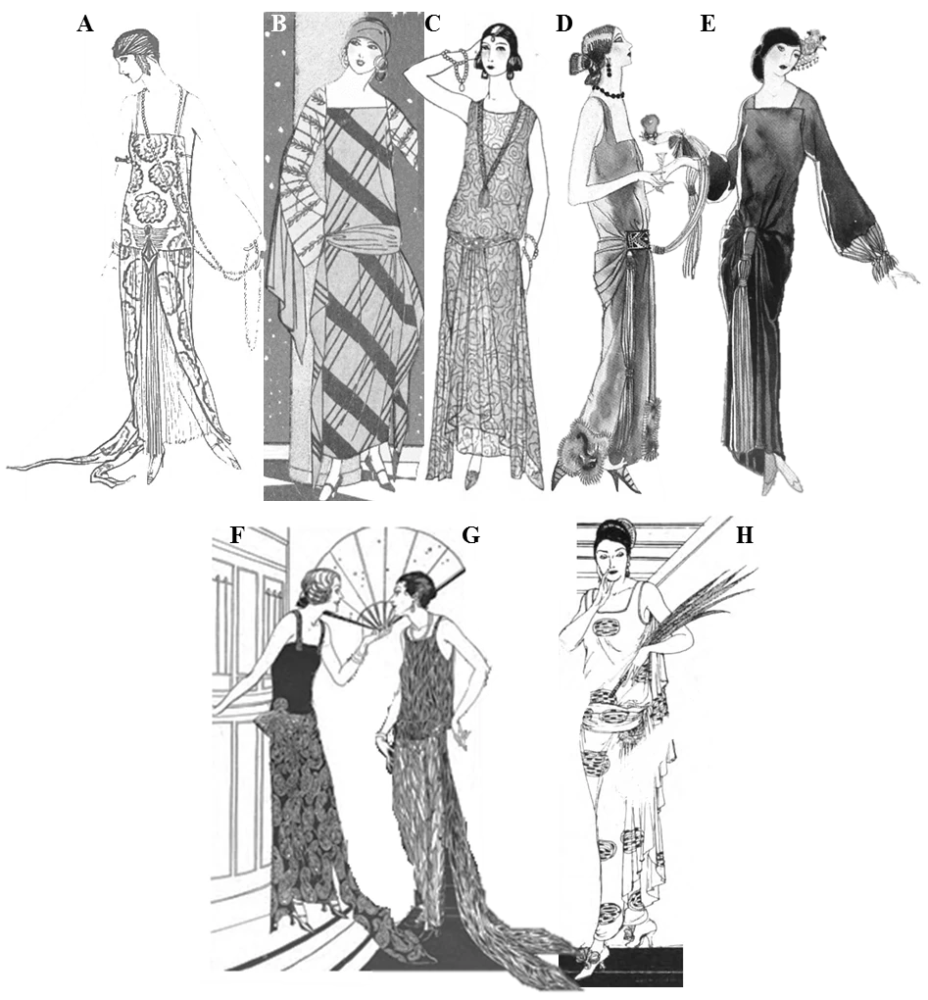
Figure 21 – Examples of “Egyptian style” of 1922.
A: Vogue (15th of March 1922); B: Art, Goût, Beauté (May 1922); C: Harper’s (May 1922);
D / E: Harper’s (October 1922); F / G / H: Harper’s (November 1922).
Source: gallica.bnf.fr / Bibliothèque nationale de France; © Public domain.
We thus understand that there are many, and consistent, features that turned a dress into a potential ‘robe égyptienne’. Before we summarise what those features are, let us go back to Harper’s, in October 1922, which has a text that helps us to understand how this Egyptian influence was perceived:
This influence is felt, not only in line and movement, but the fabric and color. The Egyptian shawl drape, and the rather scant ‘petticoat’ beneath it, is often used for simple afternoon frocks, while more formal gowns have the flat back that almost molds the figure and the front draperies and plaits seen on the figures on Egyptian friezes. Some of these gowns have a wide band around the hips, defined by two narrow bands at its edges, so that the gown has two waist-lines, a normal and a low one. Often godet plaits fall from this girdle in front to accentuate the forward movement of the gown.
To sum up, the “Egyptian style” results from the presence, in women’s clothing, of one or more of the following features:
a) Belts, ribbons, or drapes with trim in front or on the side;
b) Low hip waistline;
c) Long and straight lines;
d) Pleats and drapes;
e) Square necklines with straight lines.
A fresh look at Figures 15 and 16 allows us to conclude that what the designers of the beginning of the 20th century did was to look back and then reproduce and adapt what they saw, be it in clothing or in jewellery, hats, and hairstyles.
To end this segment, we turn to an article published in Vogue, on the 15th of January 1921, at the end of our period of analysis, in which there are three dresses from the House Madeleine et Madeleine resulting from a study that the authors might have done on the “modes des pharaons à Karnak et à Louqsor” that might have inspired them to create pieces “d’un reflet de la splendeur égyptienne” (Fig. 22). In this rather poetic description, it is particularly interesting to notice that these dresses are the product of a combination of Egyptian symbolisms and themes with the “Egyptian style”, that is, a harmonisation of the three categories previously analysed.
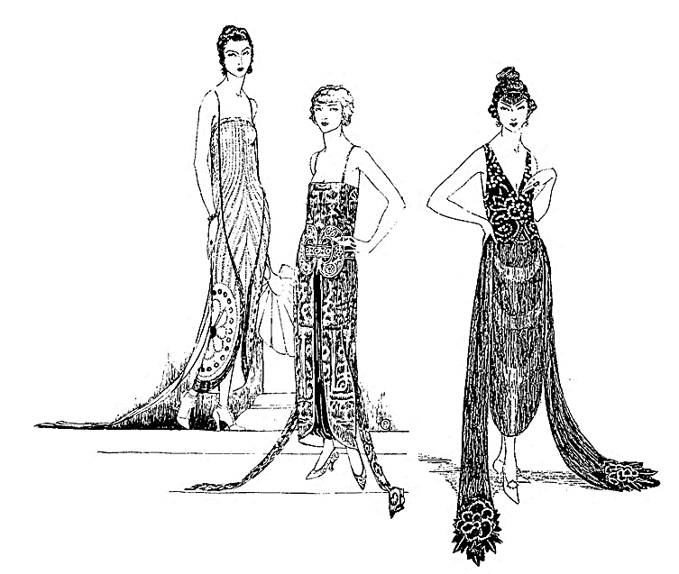
Figure 22 – Three dresses of the House Madeleine et Madeleine regarded as “un reflet de la splendeur égyptienne”. Vogue (15th of January 1921). Source: gallica.bnf.fr / Bibliothèque nationale de France.
Let us see what was said, considering the dresses from right to left:
Cette étroite robe de satin blanc recouverte de tulle brodé de lignes de jais blanc, rappelle les temps très anciens où l’Egypte était jeune et où l’art du couturier se distinguait mal de l’art de l’orfèvre, les temps très anciens où le lotus déifié était le symbole de la vie égyptienne. La silhouette est accentuée par deux bandes de jais noir qui tombent des épaules, soulignent le bas de jupe et se terminent par deux grands cercles de cabochons de jais.
D’une immobilité de sphinx elle refuse de divulguer le sens des figures symboliques et des hiéroglyphes qui ornent les lignes sobres de sa robe de lamé combinée de velours noir d’argent et de soie grise. Les lignes sont droites; la ceinture en broderie de perles et d’émeraudes, encercle les hanches. L’effet est on ne peut plus égyptien.
Ici les couturiers ont respecté la mode, en ce qui concerne la ligne. Les panneaux de paillettes tombant de la taille et formant deux brillantes traînes terminées par de larges fleurs pareilles à des lotus, font un effet décoratif qui évoque la simplicité directe et saisissante des reliefs du temple de Karnak. L’amour égyptien des motifs de bijoux se retrouve sur le corsage en saphirs et brillants sur la jupe recouverte de paillettes qui ondulent comme l’aspic de Cléopâtre.
The descriptions of these and other previously mentioned dresses, as well as other texts identified in the magazines we consulted, show that there was a concern for the accuracy of what was being made. Quite often, they made sure to reference the origin of the inspiration and the process that was used. For example, Les Modes, in December 1908, writes: “(…) jusqu’à l’inspiration des fresques égyptiennes, comme cette originale robe de tulle noir brodée d’animaux fantastiques (…)”; and in the same publication, in December 1911, we can read: “Comme l’ameublement, la toilette des femmes devient le reflet de tous les temps qui nous ont précédés et toutes les civilisations du globe. Les artistiques beautés de l’Asie, les richesses qui jaillissent des tombeaux égyptiens, (…)”.
The use of Egyptian monuments is also mentioned in Harper’s, in July 1921: “From the very first moment the Egyptians drew the prototypes of some of our best afternoon and evening gowns on the walls of their temples, history has been supplying ‘copy’ for our costumes. And the designers haven’t missed a single thing that has happened since.” In a long article in Harper’s, in April 1920, the colours used by the designer Kurzman are explained like this: “[…] are no mere approximation of the tints and tones of antiquity; they are faithful reproductions of the colorings of antique Egyptian beads, scarabs and pottery. An expert chemist in a Parisian laboratory has worked for months to achieve these convincing shades.” In the same text, this time about a dress of the same designer, we can read: “the reproduction of a bas-relief of Abydos, in which Seti I, with majestic towering headdress, is girdled exactly as is the ravishing dinner gown of blue and green.”
The magazine Les Élégances, in January 1917, describes some pieces of clothing decorated with Egyptian themes: “dessinés d’après des documents authentiques.” In Harper’s, in May 1922, the description of a dress suggests: “much like the decorative girdle princesses of the Ptolemies were so fond of wearing.” In January 1921, Vogue says: “La mode égyptienne portée par les femmes d’aujourd’hui est assez compliquée et composée d’éléments disparates et variés qui tous cependant sont d’une vérité historique incontestable.”
Besides the inspiration drawn from the Egyptian symbolism, ambience, and clothing analysed so far, we still should consider the importance and the impact on fashion of a particular historical figure: Cleopatra. Our objective is not to present and explore in depth the various domains in which, throughout the centuries, Cleopatra left her mark. That work has already been done. We will stick to identifying some examples in which this queen is seen as an influence and as a source of inspiration, especially when it comes to clothing but also in jewellery and hairstyles.
Cleopatra VII Thea Philopator (69–30 BC), an important figure in Egyptian history from the Ptolemaic period, has become an icon, a fascinating royal woman to whom time has given qualities of a captivating fictional character, whose appeal has endured from her own time to ours. According to Tyldesley (2008, 215):
(…) Cleopatra has had the greatest effect on the public imagination, inspiring a wealth of Cleopatra-themed art: novels, plays, poetry, paintings, sculptures, operas, ballets, songs, tragedies, comedies and epic films. These in turn have inspired a wealth of Egypt-themed marketing, with an anachronistic Cleopatra being used to sell everything from cigarettes to sandals.
In the fashion scene, Cleopatra was seen as an icon of beauty and elegance, although this image is the result of a strong idealisation. Sales (2010, 219) states:
Longe de ser bela, como os bustos e as moedas antigas deixam perceber (fronte determinada, longo nariz aquilino, boca generosa com lábio inferior saliente e feições um tanto masculinas, sem relação com os cânones de beleza clássica ou egípcia), Cleópatra VII foi uma mulher sedutora, carismática e inteligente. A despeito destas evidências históricas, a imagem que a tradição fixou, ampliou e mistificou foi a de uma mulher de beleza irresistível, exótica, extravagante e sexualmente insaciável, a cujo encanto e modulações da voz poucos podiam escapar.16
As an idealised Egyptian woman—beautiful, seductive, and mysterious—Cleopatra became a protagonist in theatre plays,17 operas, films, and adverts. These Cleopatra representations that inhabit the collective imagination were, obviously, of great importance in the way in which she was adapted to fashion. We highlight the case of cinema. Among the many films that have evoked the Egyptian queen, the most famous is Cleopatra (1963), directed by Joseph L. Mankiewicz and starring Elizabeth Taylor, which falls outside the period analysed. Within the period on which we focus, we should mention Sarah Bernhardt’s performance as Cleopatra in Victorien Sardou’s play Cléopâtre, photographed by Napoleon Sarony in 1891 (Fig. 23), and the film Cleopatra (1917), directed by J. Gordon Edwards and starring Theda Bara (Fig. 24).
We can say, really, that the icons from the 19th/20th century were playing an icon from the 1st century BC.
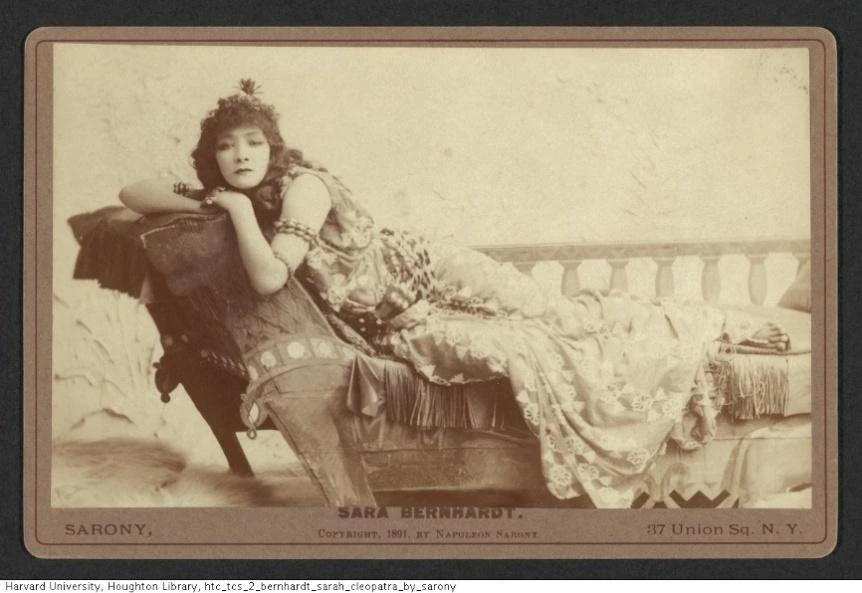
Figure 23 – Sarah Bernhardt as Cleopatra in Victorien Sardou’s play Cléopâtre,
photographed by Napoleon Sarony (1891).
TCS 2 (Bernhardt, Sara). Houghton Library, Harvard University.
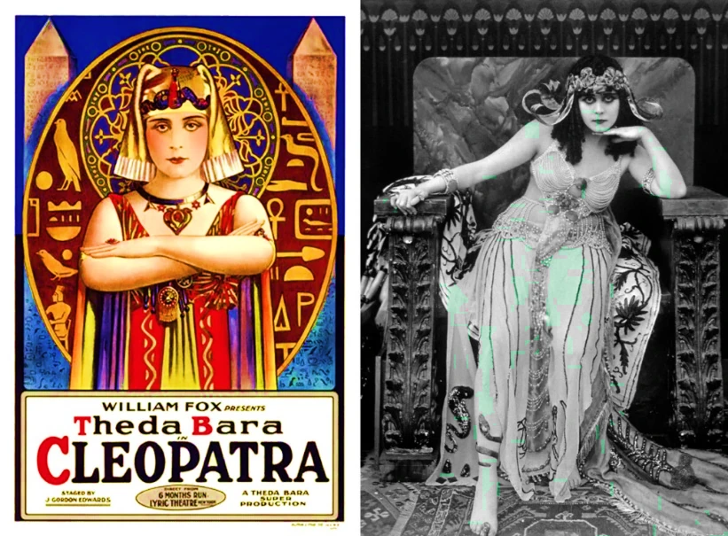
Figure 24 – Poster for the film Cleopatra (1917) and Theda Bara as Cleopatra.
© Public domain.
The outfit worn by Sarah Bernhardt as Cleopatra was, in fashion magazines, mentioned as an explanation for certain pieces of clothing or for the way in which they were worn. For example, The Ladies’ Home Journal, in May 1891, wrote:
The fashionable girdle
Of course it is called the Cleopatra. It is of inch-wide black ribbon, and has slid over it three small jet buckles – one that is close up on the back at the waist-line, one on each hip; just in front and coming quite low is a band of cut-jet that hooks in the centre just as do the belts fancied by the divine Sarah when she pictured Egypt’s queen.
Though the motif was the Egyptian queen, this helps us to understand that, in reality, what was at stake was an idealisation that theatre, opera, cinema, etc. made of her. Specifically, Cleopatra’s influence in fashion – real or fictional – can be identified in different ways, the most common being the appropriation of the queen’s name to title clothing pieces, styles, fabrics, hairstyles, shoes, jewellery, etc. In terms of clothing, we have one example in The Ladies’ Cabinet of the “mantelet Cleopatra”, in June 1848; the “peto Cleopatra”, mentioned and illustrated in La Moda Elegante, in September 1892 (Fig. 25-C); various dresses called Cleopatra (La Mode – 6th of July 1850; Le Petit Écho – 10th of May 1891; Les Modes – September 1921 – Fig. 25-A), or dresses “à la Cléopâtre”, in La Sylphide, on the 30th of August 1850.
Concerning the styles, we consider the embroideries of Cleopatra mentioned in Vogue, on the 1st of October 1922; the drapery “à la Cleopatra”, in Jardin des Modes, in November 1913; the “ceinture Cléopâtre” (Le Petit Écho – 13th of September 1891; 25th of October 1891 [Fig. 25-E]; 8th of November 1891 [Fig. 25-D]); and also the belts or ribbons on the waist inspired by the queen, as explained in The Ladies’ Home Journal, in February 1892: “(…) wear the Cleopatra cord girdle knotted loosely in front”; in the Gazette du Bon Ton, in 1912, “la présence va surtout à la ceinture de Cléopâtre, ceignant les reins et enroulée par deux fois, avant que de venir se nouer derrière, à hauteur des genoux”; and, in Les Modes de la femme, on the 1st of August 1920: “Et mon écharpe est en tissu d’argent broché de belles fleurs et de belles feuilles (…) et l’enroulement de Cléopâtre, reine d’Égypte.” (Fig. 25-B). Still referring to clothing, we have the fabrics with the name of the queen: velvet (Le Petit Écho – 19th of April 1891); crêpe (La Mode Illustrée – 24th of April 1898), and silk (La Mode Illustrée – 23rd of May 1909).
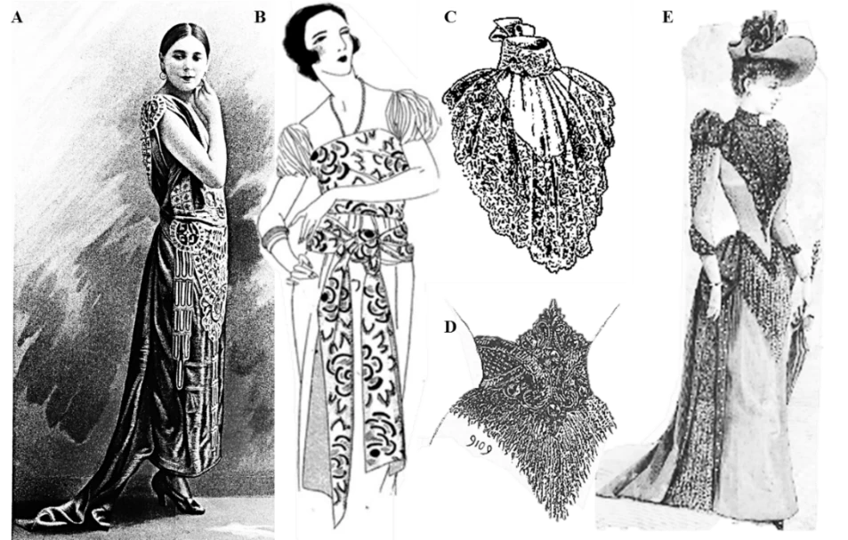
Figure 25 – Examples of clothing inspired by Cleopatra.
A: Dress called “Cléopâtre”. Les Modes (September 1921); B: Scarf with “enroulement de Cléopâtre”. Les Modes de la femme de France (1st of August 1920); C: “Peto Cleopatra”. La Moda Elegante (September 1892); D: “Ceinture Cléopâtre”. Le Petit Écho (8th of November 1891);
E: Dress with “Ceinture Cléopâtre”. Le Petit Écho (25th of October 1891).
Source: gallica.bnf.fr / Bibliothèque nationale de France.
Inspiration from Cleopatra can also be found in hats, jewellery and adornments, but we will not get into much detail, because the accessories inspired by ancient Egypt could be featured in an independent article, considering the number of examples available.
To end the analysis of ancient Egypt’s influence in fashion between Napoleon’s expedition to Egypt and the discovery of Pharaoh Tutankhamun’s tomb, we should still mention the colours. The contact with the iconography of ancient Egypt did not solely influence the shapes and motifs of clothing; it also had a strong impact on colours. The colours of the tomb’s walls (Fig. 16), of the artefacts, and of Egypt itself inspired a wide range of fabric colours used in clothing, hats, and accessories.
In 1801, The Lady’s Magazine (May and July) mentioned pieces in “Egyptian earth” or “Egyptian earth-brown”, a new shade of brown. Furthermore, “Egyptian Brown”, which Harper’s presented in November 1867 as a new colour (“a dark shade of brown (…) is ‘Egyptian’, a dead brown, a mummy-like and sombre.”), appears in the magazines consulted from March 1821 (The Lady’s Monthly) and it appears regularly until 1890 (Le Petit Écho; The Lady’s Book; The Ladies’ Cabinet; Godey’s; The Lady’s Friend and Demorest’s). Amongst the shades of brown, we find, in the 1820s, mentions of “Egyptian sand” (The Lady’s Monthly and The Ladies’ Pocket) and of “Egyptian brick” (The Lady’s Monthly).
The “Egyptian red” appears for the first time, in the magazines consulted, in January, in The Lady’s Monthly and it appears regularly until 1922 (Les Modes; Le Petit Écho; La Modiste; Femina; Vogue; Harper’s; El Correo de la Moda; Godey’s; The Delineator). In November 1891, the magazine The Ladies’ Home Journal provides a curious description of what this colour would look like:
The Egyptian-red is a combination of dullness and brightness. It sounds odd, but that is the best way it can be described. It is dull, so dull that a woman who cannot usually wear red finds this possible; but it has a marvellous touch of brightness when the sun happens to strike it, and even then, it is in harmony with a woman who has announced every season that she never could wear red.
The colour blue appears in two shades: the “Nile blue” and the “Egyptian blue”. The first one appears in two French magazines (Le Petit Écho and La Vie parisienne) at the end of the 19th century, between 1881 and 1896; the “Egyptian blue” already appears in the 20th century, in 1909, in the magazine The Ladies’ Home Journal and it appears regularly in magazines in the first two decades of the century (Femina, Les Modes, La Mode Illustrée, La Moda, Harper’s, The Ladies’ Home Journal, and The Delineator).
Green also appears in two shades: the “Nile green” and the “Eau du Nil”. The “Nile green” can be considered the more prominent and common colour, as it has appeared since the 1870s (Harper’s, April 1870), lasting beyond 1922. It is mentioned in magazines such as Femina, Jardin des Modes, Les Modes, Le Petit Écho, Art, Goût, Beauté, Vogue, Les Élégances, La Vie parisienne, La Mode Illustrée, Gazette, Cosmopolitan, The Ladies’ Home Journal, and The Delineator. The “Eau du Nil” has more fleeting appearances, mainly in Harper’s during the 1870s, but also in the French magazines Femina, Gazette, Le Journal des marchandes, and La Vie parisienne.
Finally, we have two colours, or rather shades, a little more complex and difficult to explain but both obviously inspired by ancient Egypt. The colour “Sphinx” is mentioned for the first time in Harper’s, in August 1872. In the following years, we see some derivations, such as “Sphinx grey”, which the magazine The Delineator (October 1895) presents as a “dark-gray color”; “Sphinx green” (La Mode Illustrée, November 1891); and “Blue Sphinx”, presented in Le Petit Écho (January 1910): “on fait surtout un succès à la nuance sphinx, sorte de bleu mal défini dont les teintes chatoyantes et imprécises inquiètent et amusent notre curiosité.”
The colour “Scarabée”, without declination or shade, appears for the first time in the magazine La Modiste (March 1880), when describing a hat, and two years later, in May 1882, the magazine presents a hat coloured “Scarabée d’or”; this shade of gold was also mentioned years later by Femina (April 1910) in the description of a fabric which “prend l’aspect d’un scarabée doré”. However, the more common shade was the “Vert scarabée”, appearing from January 1867 (La Vie parisienne) until December 1922 (Vogue, Le Petit Écho, La Mode Illustrée, and The Ladies’ Home Journal). Moreover, we have identified an occurrence of “Rouge Scarabée” (La Vie parisienne, August 1885) and “Scarabée groseille” (Les Élégances, January 1917). We believe that in the particular cases of these shades we have a situation in which ancient Egypt first drew attention to the insect, but observation of the animal itself then determined the shades. For a closer look at what these colours might have looked like, see Figure 26.
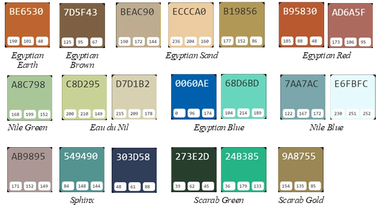
Figure 26 – Colour palette associated with Egypt and identified in the fashion magazines.
According to: https://encycolorpedia.com/
3. Conclusion
“Dame Fashion is protesting loudly that, wherever her genius rules this season, the Egyptian motif and silhouette are to be accorded a place of honor.”
(Harper’s – May 1920)
In fashion, as in most domains of Western culture, the growing familiarity with ancient Egypt resulting from Napoleon’s expedition to Egypt and all the events that followed – from monumental publications, to the great Exhibitions, to an increasing number of archaeological excavations – meant the adoption and adaptation of a multitude of influences from this civilisation.
The discovery of Pharaoh Tutankhamun’s tomb on the 4th of November 1922 and the resulting wave of Tutmania that spread worldwide are usually taken as the main milestone in the development and the peak of interest in ancient Egypt. However, and even if this assumption is not incorrect, regarding fashion we cannot continue to ignore what existed before. Truthfully, the whole period considered in this text, specifically the 19th century and the first decades of the 20th century (including 1922), gives us many examples of appropriation of ancient Egypt in fashion.
Women’s and fashion magazines, mainly European but also American, show, throughout the studied period, an increasing interest in importing drawings, inspirations, clothing styles and even colours from ancient Egypt. In 1801, we identify the first reference to a colour of Egyptian inspiration; in 1812, the first Egyptian robe; in 1835, there is the Egyptian pattern; and in 1848, we have the mantelet cleopatra. But the analysis also makes it very clear that it is in the early years of the 20th century that ancient Egypt assumes a prominent position in women’s clothing and accessories. Many characteristic features of 1920s fashion are attributed to the influence of ancient Egypt (for example, the long, straight lines, the square necklines and the mid-length dresses). Thus, whether through the use of overt Egyptian symbols – scarabs, sphinx, hieroglyphs, etc. – through the attribution of Egyptian inspiration to sometimes undefined patterns (Egyptian pattern), or through references to clothing styles (Egyptian style), the truth is that the more familiar Egyptian civilisation became to the public, the more it was used as an inspiration for European and American fashion.
Thus, when, at the end of 1922, Tutankhamun appeared in newspapers and became a world-famous figure, Egypt’s influence in fashion had already undergone a period of growth, with a more and more evident and diversified presence.
Notes
-
Return to text ↩
For more details about the historiographic discussion about Egyptomania, see Sales and Mota (2020). For a broader overview of the phenomenon of Egyptomania, see, for example, Brier (2013), Fritze (2016), Humbert (1989, 2020).
-
Return to text ↩
For a broad overview of fashion throughout this period, as well as its evolution and influences, see: AAVV, 2012; Cole, Deihl, 2015; Kennedy, Stoehrer, Calderin, 2013.
-
Return to text ↩
We cannot disregard the impact that these European events had on the American context. The echoes of the European events were felt on a large scale in the USA, mainly, but not exclusively, in architecture. As an example, we can refer to an Egyptian-style reading room for the Library of Congress, in Washington, D.C., drawn by Benjamin Latrobe, in 1808 (Parramore, 2008, 26; Fritze, 2016, 187). Concerning the triggering events, besides the direct impact of what was happening in Europe, we have, for example, the Great Exhibition, in 1852, in New York (Curl, 2005, 330).
-
Return to text ↩
The concept of “Egyptian Revival” is usually used in the same sense as Egyptomania but limited to artistic, design, and architectural expressions. It is even considered an artistic movement. For more on this subject, see Curl (2005).
-
Return to text ↩
An Egyptian-inspired building commissioned by William Bullock and built in 1812 under the direction of P.F. Robinson, inspired by the illustrations of Denon’s work. It was intended to be a museum and to house the owner’s private collection but, according to Parramore (2008, 26), the “Egyptian Hall became a major venue for art shows, many of which brought Egyptian wonders to a curious public.” For an image of the building, see Humbert (2015, 469, Figure 24.2).
-
Return to text ↩
This statement is deliberately made from a Eurocentric perspective, since that is the perspective relevant to the theme developed in this paper. In this context, we are not concerned with an in-depth analysis of the epistemological debates on the issue, since our focus is on the impact that the dissemination of this breakthrough had at the time, mainly in Europe.
-
Return to text ↩
With this in mind, we can mention the obelisk offered to the United Kingdom, also by Muhammad Ali Pasha, in 1820, erected only 57 years later, and the obelisk currently in Central Park, in New York (USA), offered by Khedive Ismail, in 1869, after the opening of the Suez Canal, and erected in 1881 (Humbert, 1989, 16; Curl, 2005, 333). Both are known as “Cleopatra’s Needles”, a designation of unknown origin that has existed at least since the 12th century (Brier, 2002, 48; D’Alton, 1993, 7).
-
Return to text ↩
Besides the Great Exhibition in London in 1851 and the Exposition Universelle in Paris in 1867, we must mention the presence of rooms of Egyptian influence in Exhibitions in Paris, in 1889 and in 1900, and in Chicago (International Columbian Exposition), in 1893 (Curl, 2005, 345; Fazzini and McKercher, 2001, 461).
-
Return to text ↩
For more on the impact of Egyptomania in the performing arts, see Humbert (2016).
-
Return to text ↩
Considering the period between Napoleon’s expedition and the discovery of Tutankhamun’s tomb, there were many archaeological discoveries in Egypt. Until 1850, the discoveries were due to a mixture of adventurers, diplomats, and proto-archaeologists, of whom we can highlight Giovanni Belzoni, who, between 1816 and 1818, worked in Abu Simbel, on the tomb of Seti I, on the pyramid of Khafre, etc., being responsible for the transfer of many artefacts to the British Museum; from 1850 onwards, we have the first archaeologists: Mariette (for example: 1851 – Serapeum of Sakkara; 1857 – tombs of the Thebes region, where he recovered many pieces of jewellery); and Anthony Charles Harris (1855 – Rhind Tomb). During the “golden years”, between 1881 and 1914, there were many discoveries, such as the one by Maspero (1881 – royal mummies in the cachette of Deir el-Bahari), by Petrie (1888 – portraits of the Fayum, the tombs in Bubastis and in the Valley of Kings; 1891–2 – Akhenaton’s Palaces, in Tell el-Amarna), by Theodore Davis (1902–14 – multiple discoveries in the Valley of Kings), and by Ernesto Schiaparelli (1904 – Nefertari’s tomb, in the Valley of Queens).
-
Return to text ↩
See https://www.ancientegyptfilmsite.nl/.
-
Return to text ↩
For a brief approach to the theme, see Markowitz (2018).
-
Return to text ↩
We also consulted many Portuguese magazines (for example: O Correio das Damas; Jornal das Damas. Revista de leitura e modas; A Avenida: Revista de moda; A Vida Elegante; A Rainha da Moda. Figurino Português da Grande Moda de Paris and A Moda Ilustrada). However, the only acknowledged fashion influence in Portugal is the Parisian one. The external factors that influenced Parisian fashion were not recognised, that is, though we can identify the presence of Egyptian influence, this influence is not acknowledged as such.
-
Return to text ↩
Empress Eugénie (5th of May 1826 – 11th of July 1920) was the last empress of the French (1853–1870) as the wife of Emperor Napoleon III. An enthusiast for antiquities, especially Egyptian antiquities, the empress was in Egypt, on the 17th of November 1869, amongst the guests for the inauguration of the Suez Canal, aboard the yacht Aigle that headed the parade, joined by the sponsor of the Canal’s construction, Ferdinand de Lesseps.
-
Return to text ↩
We can see this same intention, in July 1905, in Les Modes: “plis à l’égyptienne”.
-
Return to text ↩
“Far from being beautiful, as the busts and old coins show (strong face, long, aquiline nose, large mouth, with a protruding lower lip, and man-like features, unrelated to the classical or Egyptian canons), Cleopatra VII was a seductive, charismatic and intelligent woman. Despite this historical evidence, the image established, amplified and mystified by tradition was one of a woman of irresistible beauty, exotic, extravagant and sexually insatiable, whose charm and voice modulations few could escape”.
-
Return to text ↩
First performed circa 1607, Shakespeare’s Antony and Cleopatra, through its many performances and adaptations, played an important role in disseminating Cleopatra’s image (Osmond, 2012).
Reference List
- AAVV (2012) Fashion. The definitive history of costume and style. New York: Smithsonian.
- Bednarski, A. (2010) “The Reception of Egypt in Europe.” In: A. Lloyd, ed., A Companion to Ancient Egypt. Vol. 2. Oxford: Blackwell Publishing,
pp. 1086–1108. - Bohleke, K.J. (2014) “Mummies are Called upon to Contribute to Fashion: Pre-Tutankhamun Egyptian Revivalism in Dress”. In: Dress, 40:2, pp. 93–115. doi: 10.1179/0361211214Z.00000000027
- Bret, P. (1996) “Bonaparte en Égypte”. In: L’Égypte ancienne. Paris: Éditions du Seuil, pp. 203–216.
- Brier, B. (2002) “Saga of Cleopatra’s Needles.” Archaeology, 55 (6), pp. 48–54.
- Brier, B. (2013) Egyptomania: Our Three Thousand Year Obsession with the Land of the Pharaohs. New York: Palgrave Macmillan.
- Cole, D.J. and Deihl, N. (2015) The History of Modern Fashion. From 1850. London: Laurence King Publishing.
- Coumbe, Clement W. (1908) “The Ancient Egyptian Scarab – Its History and Symbolic Significance.” The Jewelers’ Circular Weekly 56, 22, pp. 43–44.
- Curl, J. S. (2005) The Egyptian Revival. Ancient Egypt as the Inspiration for Design Motifs in the West. London/New York: Routledge.
- D’Alton, M. (1993) The New York Obelisk or How Cleopatra’s Needle Came to New York and What Happened When it got There. New York: The Metropolitan Museum of Art.
- Fazzini, R. A. and McKercher, M. E. (2001) “Egyptomania.” In: D. B. Redford, ed., The Oxford Encyclopedia of ancient Egypt. Vol. 1. Oxford: Oxford University Press, pp. 458–465.
- Fritze, R. H. (2016) Egyptomania: A History of Fascination, Obsession and Fantasy. London: Reaktion Books.
- Geczy, A. (2013) Fashion and Orientalism: Dress, Textiles and Culture from the 17th to the 21st Century. London: Bloomsbury Publishing.
- Houston, M. G. and Hornblower, F. S. (1920) Ancient Egyptian, Assyrian, and Persian costumes and decorations. London: A. & C. Black.
- Humbert, J.-M. (1985) “Mariette Pacha and Verdi’s Aïda.” Antiquity, 59 (226), pp. 101‑105. doi: 10.1017/S0003598X0005691X
- Humbert, J.-M. (1989) L’Égyptomanie dans l’art occidental. Paris: Éd. ACR.
- Humbert, J.-M. (2015) “Egyptomania. Fascination for Egypt and Its Expression in the Modern World.” In: Hartwig, M. K., ed., A Companion to Ancient Egyptian Art. New Jersey: John Wiley & Sons, pp. 465–481.
- Humbert, J.-M. (2016) “Ancient Egypt on Stage from Bonaparte’s Military Campaign up to the Present Time.” Journal of Ancient Egyptian Interconnections, Vol. 8, pp. 26–48. doi: 10.2458/azu_jaei_v09i1_humbert
- Humbert, J.-M. (2020) “Plaidoyer pour l’Égyptomanie, ou Comment s’approprier une Égypte fantasmée”. In: M. J. Versluys, ed., Beyond Egyptomania, Objects, Style and Agency. Berlin: De Gruyter, pp. 39–52.
- Hurley, C. (2020) “Pharaohs, Papyri and Hookahs. Displaying and Staging Egyptian Antiquities in Nineteenth Century European Exhibitions.” In: M. J. Versluys, ed., Beyond Egyptomania, Objects, Style and Agency. Berlin: De Gruyter, pp. 185–208.
- Jones, O. (1856) Grammar of Ornament. London: Day and Son.
- Kennedy, A., Stoehrer, E.B., and Calderin, J. (2013) Fashion Design, Referenced. A Visual Guide to the History, Language & Practice of Fashion. Beverly: Rockport Publishers.
- Laurens, H. (1997) L’expédition d’Égypte. 1798–1801. Paris: Éditions du Seuil.
- Lloyd, A.B. (2010) “The Reception of Pharaonic Egypt in Classical Antiquity.” In: A. Lloyd, ed., A Companion to Ancient Egypt. Vol. 2. Malden, Oxford: Blackwell Publishing, pp. 1065–1085.
- Markowitz, Y. J. (2018) “The Allure of Ancient Egyptian Jewelry”. Aegyptiaca. Journal of the History of Reception of Ancient Egypt, 2, pp. 138–149.
doi: 10.11588/aegyp.2018.2.48019 - Nadelhoffer, H. (2007) Cartier. San Francisco: Chronicle Books.
- Osmond, S. (2012) “‘Her Infinite Variety’: Representations of Shakespeare’s Cleopatra in fashion, film and theatre”. In: Film, Fashion & Consumption 1: 1, pp. 55–79. doi: 10.1386/ffc.1.1.55_1
- Parramore, L. (2008) Reading the Sphinx: Ancient Egypt in Nineteenth-Century Literary Culture. London: Palgrave Macmillan.
- Sales, J. C. (2001) “Description de l’Égypte”. In: L. M. Araújo, dir., Dicionário do antigo Egipto. Lisboa: Editorial Caminho, pp. 270–271.
- Sales, J. C. (2007) Estudos de Egiptologia: Temáticas e Problemáticas. Lisboa: Livros Horizonte.
- Sales, J. C. (2010) “Cinema e História Antiga: a propósito do filme Cleopatra (1963) de Joseph Leo Mankiewicz. II parte”. In: Cadmo, 20, pp. 195–235.
doi: 10.14195/0871-9527_20_11 - Sales, J. C. and Mota, S. (2020) “Tutankhamun in Portugal. Reports in the Portuguese Press (1922–1939)”. Aegyptiaca. Journal of the History of Reception of Ancient Egypt, 5, pp. 565–609. doi: 10.11588/aegyp.2020.5.76130
- Solé, R. (1998) “L’aventure de Suez”. In: À la découverte de l’Égypte. Paris: Paris-Musées, pp. 52–57.
- Tyldesley, J. (2008) Cleopatra. Last Queen of Egypt. London: Profile Books Ltd.
- Vercoutter, J. (1986) À la recherche de l’Égypte oubliée. Paris: Gallimard.
Cite this article
Sales, J., Mota, S. & Mota, C. 2026. From ancient Egypt to the catwalks: fashion as an expression of Egyptomania in the 19th century and the beginning of the 20th century. Bibliothèque ouverte d’égyptologie 2026/5. Montpellier : Bibliothèque ouverte des mondes anciens, 51 p. 10.5281/zenodo.22377988